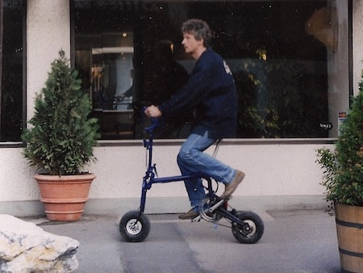

Jaf

Many cars get discarded because of their age. However a lot of the mechanical parts, like axles and transmission, are still in good condition and could be reused.
Reused parts could be shipped to a developing countries and used to build utility vehicles. Here is a project I built using a recycled Toyota Tercel 4WD. I called it affectionately the “JAF”.
Bicycles
A bicycle is great for short distance travel. But what do you do when you are not using it?
Bikes are big, take a lot of room to store and are bulky to carry around.
The answer? A bike that when folded, can be carried and stored like a suitcase.
These days it could have electric power as well.
Dior

Horses are one of my early passions. Back in the day, horses meant “just” riding. I liked it, however the riding-school was not very much fun.
Surfing the internet, I learned about communication with horses based on a better understanding of the psychology of training.
So I moved to the US to learn about “natural horsemanship”.
Jacques

While studying horsemanship in the US, I become involved with producing web-based educational materials for a company leading the digital horsemanship community. The training company was very progressive using IT processes throughout most of their business. I was hooked and hungry to learn more. I am now back in school at Santa Fe College to study.